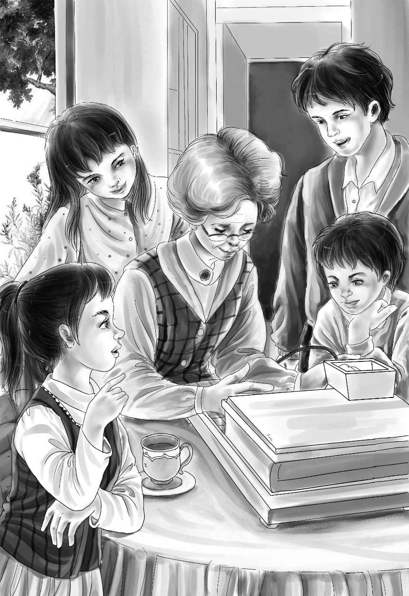

Fast Work
卡特先生说：“我觉得你们的爷爷肯定乐意帮你们。我会去绿野镇，告诉他整件事情的经过的。”
他看了看表，迅速起身，“再见，孩子们，祝你们好运！”
很快，他就消失不见了。
班尼说：“神秘人总是来无影去无踪，对不对？”
“现在棘手的事情是，”亨利说，“简姑婆不让爷爷踏进她的农场。如果爷爷来帮我们的话，她很有可能会生气呢！”
“哦，说不定她会非常高兴！”庞德先生笑着说，“她应该感激你爷爷能来才对啊！你们想，她肯定不乐意让外人随意践踏她的农场。”
回去的路上，孩子们一言不发，大家都在想怎么跟姑婆开口说这件事。
“别担心了，”维莉说，“船到桥头自然直。”
然而，接下来的情形，就连维莉也没想到。
望望正在门口等他们，摇头摆尾地叫唤着。麦琪在厨房里微笑着，简姑婆也在前屋朝他们笑呢！她坐在长椅子上，穿戴得整整齐齐。孩子们从来没见过她如此齐整的样子。
“简姑婆！”维莉大声喊道，“太好了，您终于下床了，还穿好了衣服！还有比这更让人高兴的事吗？”她弯下腰，吻了吻姑婆。
这突来之吻让简姑婆有点手足无措，也很喜出望外。
“我去把厨房的餐桌搬出来。”亨利说。
“为什么不在这张桌子上吃饭呢？”
“这可是您最好的桌子啊！”杰西说。
“别忘了，这也是你们的桌子！”简姑婆说，“我随你们。”
于是，一家人开开心心地坐在桌旁吃起了晚餐。
“现在可以告诉我石溪镇的事了吧！”简姑婆说。
孩子们七嘴八舌，把整件事一五一十地告诉了姑婆。他们告诉姑婆，神秘人其实是个好人。至于那三个坏蛋，为了不吓着姑婆，他们省略了很多细节。
“反正，他们已经被抓住了，”班尼说，“再没法捣乱啦！”
等所有问题都解决后，就只剩下一件棘手的事情——爷爷。
“还会有更多陌生人来这里呢！”班尼说，“卡特先生说，这儿很快就会鸡犬不宁了，有很多人要来看铀矿，说不定还有人想偷矿石呢！”

简姑婆点了点头：“他认为我们该怎么做？”
“他说，我们没法自己照看农场，”亨利说，“我们必须找个本事很大，又有钱的人来开发铀矿。”
简姑婆慢慢地说：“我知道有个人可以，那就是我的弟弟詹姆斯。”
孩子们静默了一会儿，杰西忍不住开口道：“对，我们说的就是他，简姑婆！”
“可我担心他不愿意呢，”简姑婆说，“毕竟我曾经那样对待过他。”
“我保证爷爷肯定会愿意的。”杰西赶紧安慰道。
“但愿如此，”姑婆说，“我可不想让几百号人整天在我的农场上跑来跑去——不，是你们的农场。我这就给你们的爷爷发一封夜间电报。”
“等您写好了电报，”亨利说，“我就送到汤姆·杨那里，让他今晚就发出去。”
“你们很喜欢你们的爷爷，是吗？”瘦小的姑婆露出一副不屑的表情。
“我们也很喜欢您。”亨利连忙说。
“亨利，快给我拿纸来，”简姑婆说，“趁我还没改变主意。”
孩子们静静地看着姑婆写电文，一声也不敢吭，生怕她随时会改变决定。
“你们听听这样写怎么样，”她终于写完了，“‘铀矿现属于你的孙子孙女，你愿不愿意接手铀矿生意？当然我也同意让你当经理。孩子们和望望向你问好。简。’”
“太好了！”亨利说。
第二天早上，刚刚吃过早饭，发给简姑婆的电报就送来了。
她大声念了出来：“‘乐于接手生意。你不必非得见我。确定一下你自己留多少土地，我们给你扎上篱笆。我会派守卫给你看管房子。詹姆斯·奥登。’”
“派守卫！”班尼激动地说，“好刺激啊！”
杰西喊道：“快看！来了一辆车。”
车上全是电话公司的人。其中一个人客气地问简姑婆，想在哪里安装那些电话。
“那些电话？”班尼问，“是要安两部电话吗？”
“我们要装四部呢！”那人说，“看来你们并不清楚整个安排。”
“的确不清楚！”亨利说，“现在我得去镇上，用那里的电话打给爷爷，待会儿就没机会了。”
亨利带着望望出发了。
能给爷爷打电话实在太令人开心了！
“亨利，仔细听好了，”奥登先生说，“姑婆的农场必须保留，让她能住得舒舒服服的。你有空的时候就让她计划一下，在哪里安篱笆，那样她就不会被打扰了，明白吗？”
“明白了！您的意思是还是由我们来管理农场？”
“没错！”
亨利注意到，爷爷仍然把农场称为“姑婆的农场”。亨利知道，他必须马上着手开始装篱笆。爷爷说“你有空的时候”，实际上的意思是“马上”。
亨利赶回农场，把奥登先生的话转达给姑婆。
“爷爷让我们尽快定好在哪儿安装篱笆。”
“我早就计划好了，”简姑婆说，“这是农场的图纸，我在上面标出了篱笆的位置。”
简姑婆听了听外面的动静，“又来了一辆车。”
“可怜的简姑婆，”杰西说，“您今后没法子清净了。”
“那辆车也是爷爷给您派来的。”班尼说。
果然，来的人正是奥登先生派来安装篱笆的。亨利很开心，姑婆已经准备好了图纸。
杰西问：“简姑婆，要不要让亨利把您抱到床上？”
“不用，我想让他扶我到厨房的窗户边，我想看看车——我什么都想看。”
亨利把姑婆扶到厨房窗户边的一把大安乐椅上。
“爷爷办事的效率够高吧？”杰西说。
“他一直是个雷厉风行的人，”简姑婆说，“过去他性子更急，现在好多了。瞧，又来了一辆车！”
“真不可思议，”维莉说，“这么热闹，我们什么活儿也干不成了。”
班尼兴奋地跑进来，脸上红扑扑的。
“守卫来了！”他喊道，“有了他们，到时候就不会有人整天来敲咱们的门，问铀矿的事儿了。守卫说有那么多人来打扰，我们肯定会很烦，可我怎么不觉着烦呢？简姑婆，您呢？”
“我也不会烦，至少现在没有。”简姑婆说。